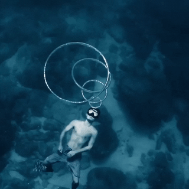
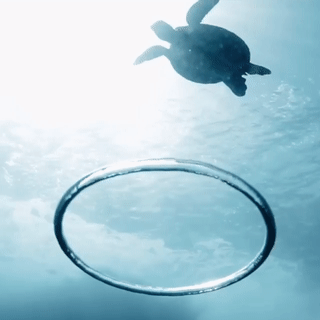
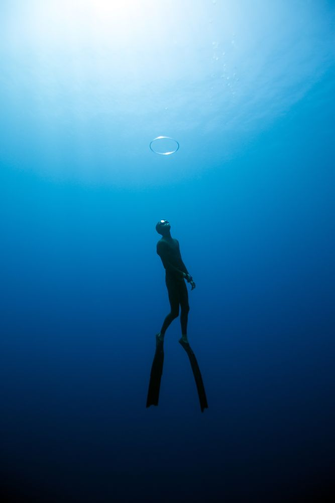

This is an instructional page on how to make underwater bubble rings. You've probably seen photos pop up on your Instagram feed of divers with perfect circles of air above them. It looks difficult, but it's actually quite easy to do if you follow these five steps.


5 Steps
Take a deep breath of air and dive down as deep as possible.
Position yourself parallel to the surface, tilting your head back slightly. You need to do this in order to create perfectly circular bubbles.
Fill your cheeks with air and stick your tongue out a bit.
Pull your tongue in and release a burst of air by quickly popping your mouth open while still maintaining the perfect circular shape.
Now ask your friend to take some pictures of you and there you have your Instagram worthy pics!

Warnings
Warnings
There is a potential risk when attempting to blow bubble rings. So practice in safe conditions before trying it in open water.
Do not push your limits and dive down too deep.
Keep in mind that you need enough oxygen to make it back to the surface after blowing your bubble rings.